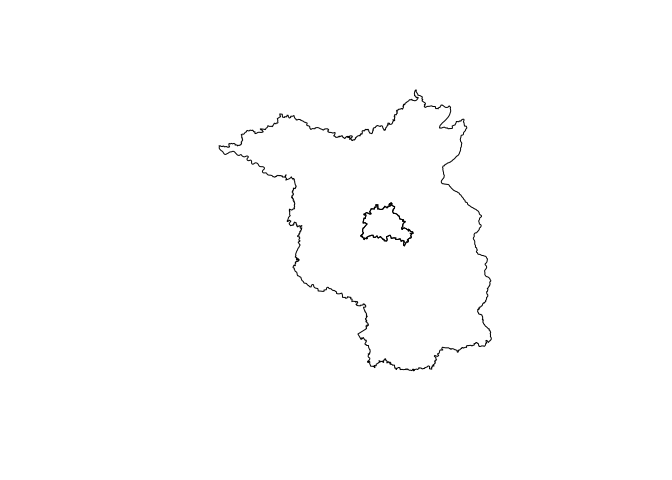

{nutscoder} provides the function nuts_geocode, which attempts to find NUTS region codes for location names by using Nominatim to search OpenStreetMap (OSM) data.
Installation
You can install the development version of {nutscoder} like so:
remotes::install_github("RegioHub/nutscoder")Usage
library(nutscoder)
nuts_geocode(c("Hamburgo", "هامبورغ", "HH", "Berlin", "🐻Bärlin", "ベルリン",
"North Rhine-Westphalia", "nrw"))
#> # A tibble: 8 × 5
#> location name nuts_1 nuts_2 nuts_3
#> <chr> <chr> <chr> <chr> <chr>
#> 1 Hamburgo Hamburg DE6 DE60 DE600
#> 2 هامبورغ Hamburg DE6 DE60 DE600
#> 3 HH Hamburg DE6 DE60 DE600
#> 4 Berlin Berlin DE3 DE30 DE300
#> 5 🐻Bärlin Berlin DE3 DE30 DE300
#> 6 ベルリン Berlin DE3 DE30 DE300
#> 7 North Rhine-Westphalia Nordrhein-Westfalen DEA <NA> <NA>
#> 8 nrw Nordrhein-Westfalen DEA <NA> <NA>The sf geometry of the geocoded NUTS regions can be returned:
nuts_geocode(c("berlin", "brandenburg"), return_geometry = TRUE) |>
sf::st_geometry() |>
plot()
The argument nominatim_api can be used to specify the API URL of the Nominatim instance used to search for OSM data. By default, nuts_geocode() uses the public Nominatim instance (nominatim_api = "https://nominatim.openstreetmap.org"), which has an absolute maximum of 1 request per second and is not suitable for intensive use. You can install your own instance of Nominatim to avoid the limitations of the public instance.
Citation
To cite package ‘nutscoder’ in publications use:
Nguyen HL (2023). {nutscoder}: Geocoding to NUTS Region Codes. https://doi.org/10.5281/zenodo.7679254, https://github.com/RegioHub/nutscoder
A BibTeX entry for LaTeX users is
Disclaimers
The use of the server running at https://nominatim.openstreetmap.org is governed by the Nominatim Usage Policy.
Geodata from OpenStreetMap are licensed under the terms of the Open Database License (ODbL) 1.0.
Use of any OSMF provided service is further governed by the OSMF Terms of Use.